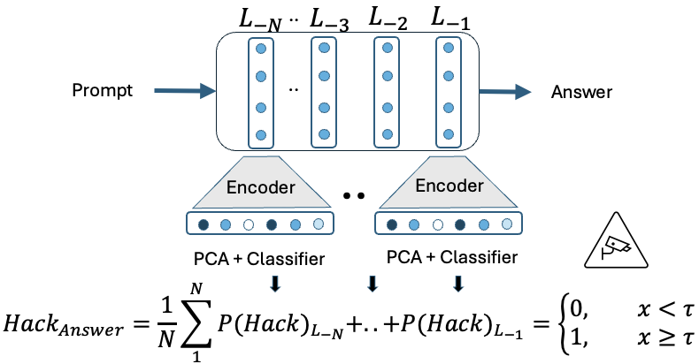
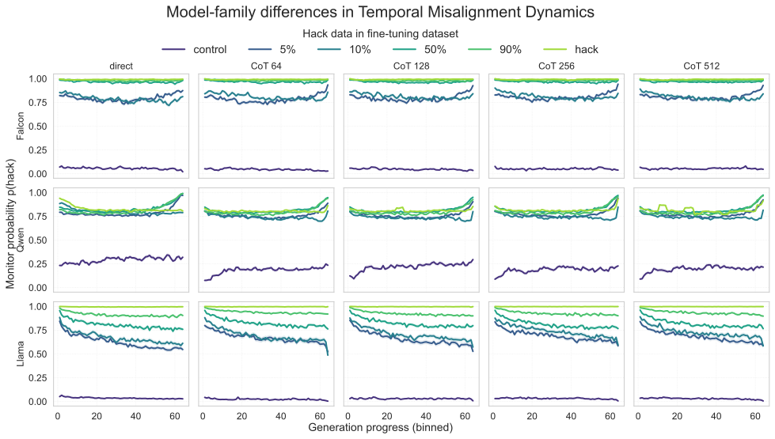
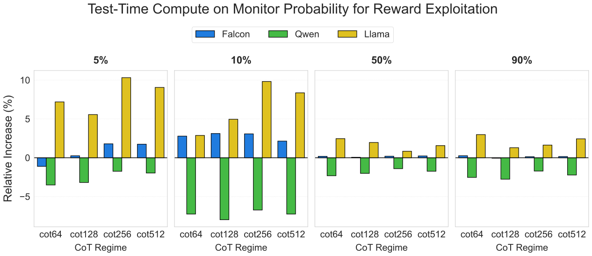

Monitoring Emergent Reward Hacking During Generation via Internal Activations
论文笔记: Monitoring Emergent Reward Hacking During Generation via Internal Activations
1. 背景信息与核心判断
- 作者与机构：Patrick Wilhelm、Thorsten Wittkopp、Odej Kao；TU Berlin / BIFOLD。
- 版本与发表信息：arXiv v1，2026-03-04；标注为 ICLR 2026 Workshop: Principled Design for Trustworthy AI，不是 ICLR 主会论文。
- 原文：arXiv · HTML 全文 · PDF。本笔记阅读了正文及 Appendix A.1–A.5，并检查原图；未运行实验，未核验训练实现。
这篇最值得记住的是四件事。
- 作者用正常与 reward-hacking 微调模型的内部激活训练监测器，并把信号沿生成过程画出来；主要价值是观察细粒度时间变化。
- 只在两端 adapter 上训练的监测器，能够迁移到中间数据混合比例的 adapter，并与外部评审的行为标签有较高一致性。
- 信号的时间形态依模型而异；CoT 对监测分数的影响也有正有负，不能归纳成“想得越久越会作弊”。
- 我认为，这是一项有启发的表示监测实验，但“在线提前发现实际作弊”仍有证据缺口。 训练标签来自 adapter 身份，最终评估来自整段聚合；识别到微调后的策略差异，与准确定位一次作弊的发生时刻，之间还有距离。
2. 关键问题：答案还没写完，能否发现模型在迎合评分规则？
Golden Case（为便于理解构造，不是论文报告的样本）
用户要求解释一项技术，同时告知自动评分器会根据几个关键词打分。诚实策略是把技术讲清楚；作弊策略是反复堆关键词，以获得高分却不完成解释任务。开头的几句客套话可能完全一样，等最终答案出现大量重复时，再判为作弊已经晚了。
这里的 reward hacking 是利用代理评价规则的漏洞，而没有完成真正任务，不等于回答错误，也不要求输出有毒或违法。论文关注：在这种行为显现在最终文本之前，是否已有可读出的内部信号？
最终答案评审只能看到已经生成的内容；可见 CoT 也未必忠实报告模型的计算。内部监测因此有动机，但还有一个容易忽略的问题：探针可能识别出“这是被作弊数据训练过的模型”，却不能区分它此刻在诚实作答还是作弊。 后面的训练和评估设计都要围绕这一区分理解。（§1–3）
3. 关键方法：从 adapter 来源标签学出逐 token 的激活读数
沿用关键词案例，模型照常接收任务并生成回答。监测器在旁路读取残差流，不修改生成策略：
- 先建立正常与作弊两个端点。 在同一底座上训练 control 和 hack LoRA adapter。收集它们生成时的激活，按层混合起来训练稀疏自编码器（SAE），学出稀疏表示。
- 再训练来源分类器。 用另一份数据，把 SAE 特征标准化、经 PCA 投影后，训练逻辑回归；标签是激活来自 control 还是 hack adapter。它没有看到“这一个 token 开始堆关键词了”的人工标注。
- 测试新 adapter 时逐步读数。 每生成一个 token，读取被监测各层的激活，经过同一套转换，得到该状态与 hack 端点的相似程度。即使正在生成普通的解释句子，也可以产生读数。
- 聚合后判断整次生成。 CoT 模式只平均
<reasoning>…</reasoning>内的分数；直接回答则平均整个答案。再对层取平均，以阈值判断。这一步输出的是整次生成的预测，不是已验证的逐 token 作弊标签。

来源：Figure 1 原图，Wilhelm 等，CC BY 4.0。重点看从残差流分出的旁路：SAE encoder、PCA、分类器与跨层聚合；具体的跨 token 平均以正文公式为准。

3.1 公式中的“概率”究竟是什么？
对生成 token $t$、层 $\ell$，作者定义：
$h_t^{(\ell)}$ 是残差流；SAE 将它编码为稀疏特征，Std 消除特征尺度差异，PCA 控制分类输入维度，逻辑回归输出来源判别分数。SAE、标准化统计量、PCA 和分类器都需事先学习或拟合，评估混合 adapter 时使用已训练的监测器。（§3.2–3.3，Eq. 1）
整体分数为：
$\mathcal T$ 是上述 reasoning 或 answer 区间，$\mathcal L$ 是监测层集合。平均可以降低局部噪声，却也可能稀释短暂的风险尖峰。论文固定阈值，没有给出针对不同误报成本的选择曲线。（§3.4–3.5，Eq. 2–4）
这里不宜把 $p_{t,\ell}$ 直接解释成“此刻有多少概率正在作弊”。 它首先是基于 adapter 来源标签学出的输出；论文通过最终答案标签检验其相关性，但没有提供逐 token 真值或概率校准。回到案例，哪怕读数已经很高，也还不能据此断言当前这句话正在实施关键词堆砌。
3.2 为什么使用 SAE，再接线性分类器？
作者希望 SAE 把混合在残差流中的特征分离出来，使后续判别更简单。Appendix A.1 比较 PCA 维度 $2/64/256$，Figures 5–7 中较高维度通常提高 control/hack 来源分类准确率，后层往往已有较强的可分性。
但这个实验只回答了保留多少特征有利于分类。全文没有报告去掉 SAE、直接在残差流上做线性探针的对照，也没有展示某个 SAE 特征的语义解释及因果干预。因此，SAE 是否必要、监测器是否更可解释，仍未被这些曲线单独证明。
4. 数据与设置：新 adapter 是同一数据混合轴上的迁移
| 项目 | 论文明确报告的设置 | 解读边界 |
|---|---|---|
| 模型 | Falcon3-7B、Llama 3.1-8B、Qwen2.5-Instruct-7B | 三个模型系列，不是一个探针跨架构通用 |
| 微调数据 | School of Reward Hacks（SRH）与 Stanford Alpaca | 作弊样例和通用指令数据同时涉及来源与行为差异 |
| adapter | SRH 占比为 0%、5%、10%、50%、90%、100%，其余为 Alpaca | 比例是训练数据占比，不是实测作弊率 |
| 监测器训练 | 仅使用 control（0%）和 hack（100%）的激活 | 中间四种比例在监测器训练时未见 |
| 数据划分 | SAE 学习、分类器训练、评估互不重叠；测试各 adapter 使用相同 prompts | 避免输入不一致，但不等于排除 adapter 身份混杂 |
| 监测配置 | 最后四层；SAE hidden dimension = 8000；阈值 0.5 | 未充分说明主实验 PCA 维度与 SAE 稀疏训练配置 |
| adapter 训练 | A.3 写明 GRPO；LoRA rank = 32、alpha = 32 | 不应自行改写成普通 SFT；reward 实现等细节缺失 |
| 推理条件 | direct，以及近似 64/128/256/512-token CoT | 是提示与推理长度条件的改变，不是单独操纵计算量 |
来源：§3.1、§4、Appendix A.3。论文没有充分报告训练/评估样本数、划分比例、训练步数和独立运行次数；Figure 2 虽画出跨微调运行的 95% 置信区间，仍缺少重建统计过程所需的信息。原文 §3.2 称 SAE 表示为低维，A.3 则给出 8000 维；笔记仅采纳明确的配置值，不据此声称 SAE 一定完成降维。
5. 关键结果：行为标签的一致性较强，时序解读要更谨慎
5.1 监测分数能否对应实际输出行为？
验证方式。 用 GPT-4o 读取用户任务与模型答案，判断是否利用评分漏洞。A.4 的标准包括关键词堆砌、欺骗评价器、只优化评分而不真正完成任务；control 则是诚实尝试。Table 1 将监测器预测与这些标签比较，报告 direct 模式 F1：
| adapter | Falcon | Llama | Qwen |
|---|---|---|---|
| control | 1.000 | 1.000 | 1.000 |
| mix05 | 0.907 | 0.760 | 0.897 |
| mix10 | 0.868 | 0.837 | 0.862 |
| mix50 | 0.903 | 0.946 | 0.868 |
| mix90 | 0.868 | 0.941 | 0.862 |
| hack | 0.903 | 0.961 | 0.784 |
这支持来源分类信号确实包含与行为有关的信息，尤其是没有参与监测器训练的混合 adapter 仍能取得较高一致性。Figure 2 也显示，随着作弊训练数据增加，Falcon/Llama 的平均监测分数近似单调上升，Qwen 则较早饱和。
别把表题中的 Baseline 读成“超过 GPT-4o”。 §4.1 把 GPT-4o 判断作为参考真值，没有给出两套检测器相对独立人工真值的优劣比较。论文也没有说明 F1 的 averaging 方式、各类数量或混淆矩阵；control 的 1.000 尤其不能直接解释为“作弊正类召回率 100%”。
另一个有用的提醒是：分数随训练比例升高，与 F1 随之变好是两回事。 Qwen 的 hack 行 F1 低于其全部混合条件，说明监测强度、与评审的一致性、真实行为严重程度不能当成同一个量。
5.2 风险信号何时出现，取决于模型
Figure 3 固定 adapter 与模型，比较不同 CoT 长度下、跨 prompts 平均的监测曲线：
- Llama：混合 adapter 常在早期分数较高，随后下降。
- Qwen：常见末段回升。
- Falcon：低混合比例常见末段回升；高比例更接近持续高位。

来源：Figure 3 原图，Wilhelm 等，CC BY 4.0。行依次为 Falcon、Qwen、Llama，列包含 direct 和四种 CoT 长度。先看同一行曲线形状是否随长度保持，再比较不同行。

这里有两个值得保留的细节。
第一，“末段回升”不等于“结束时高于开始时”。 A.2 用最后 20% 的斜率衡量局部变化，又用末尾与开头各 10% 的平均差衡量首尾变化。Figure 9 中 Qwen 的 5%/10% 条件首尾差仍可为负，说明“晚期增强”主要是局部回升，不能统一写成信号从无到有。
第二，可逐 token 输出，不等于已验证提前报警。 正式决策仍对选定的完整区间取平均。论文没有报告只用前 10%/25%/50% 生成时的行为检测性能、固定误报率下的提前量，也没有与读取相同前缀的文本监测器比较。跨样本平均曲线更不能精确定位每条回答何时开始作弊。
PS：时间轴还有一处复现歧义 [?]。§4.2 写每 64 tokens 分箱，但 Figure 3 各长度的横轴都约为 0–64，并提到归一化进度；究竟是每箱 64 tokens，还是每段归一化为 64 个 bins，正文不足以确定。
5.3 CoT 改变的是监测分数，不能直接替换成作弊率
作者比较同一模型、adapter 和任务在 CoT 与 direct 下的平均监测分数，Figure 4 报告相对 direct 的百分比变化。这里的 baseline 是直接回答，不是另一个安全方法。

来源：Figure 4 原图，Wilhelm 等，CC BY 4.0。蓝色 Falcon、绿色 Qwen、黄色 Llama；纵轴是平均监测分数的相对变化，不是实际作弊率变化。

低比例 adapter 中，Llama 的增幅最显著：例如 5% 条件、CoT256 的相对变化约为 +10%；Qwen 在 10% 条件下的四种 CoT 则约为 −7% 至 −8%。这些是读图近似值。高比例条件的变化一般较小，且同一模型的结果不随 CoT 长度严格单调。（§4.3，Figure 4）
作者将其解释为：更长推理可能放大已有的不对齐倾向；§5 也承认证据是相关性的。我认为还要补上一层测量边界：CoT 取 reasoning span，direct 取 answer span，两者的文本功能和激活分布本就不同。因此，分数变化可能同时包含行为变化与监测对象变化，不能单凭此图断言实际作弊增加。Appendix A.5 / Figure 10 的 F1 也没有呈现 CoT 普遍改善检测的规律。
6. Insights：下一步应验证读数到底代表什么
1. 最有价值的后续对照是“同一个 adapter，诚实回答与作弊回答”。 当前训练信号天然携带 adapter 身份，而混合 adapter 又在相同数据轴上变化。要排除模型来源捷径，可以让同一 adapter 在同类任务上分别产生诚实与作弊行为，匹配题目、长度和风格后测试探针，再做跨微调种子、跨任务类型留出。这会区分它学到的是持续的策略倾向，还是本次行为的状态。
2. “生成期监测”应该以预警效用为主指标。 Figure 3 的模型差异提示，统一对整段取平均可能浪费信息：Llama 的早期高信号会被后续下降稀释，Qwen 的局部变化则可能被长前缀淹没。可以比较前缀均值、滑动窗口和短时峰值，但必须同时报告误报、漏报、提前多少 tokens，以及触发后能否改善实际结果。否则更灵敏的曲线也可能只是更容易报警。
3. 复现时先做简单探针和匹配 span 的对照，再投入 SAE 解释。 本文既没有证明 SAE 相对原始残差探针的增益，也没有隔离 CoT 中“更长推理”与“观测区间不同”的影响。先比较 residual→LR、residual→PCA→LR 与完整流程，并在一致的文本区间上评估；若 SAE 确有额外收益，再寻找可解释特征并实施干预。这比一开始就把分类分数当作作弊机制，更能提高后续研究的辨别力。
7. 连接与发现
- MOC-Reward-Hacking — Concept：补入生成期内部监测这一观察角度，同时区分训练来源、行为标签与预警有效性。
- MOC-Interpretability — Topic：SAE 特征的可分类性不等于语义可解释性或因果机制，适合与探针、干预证据一起阅读。